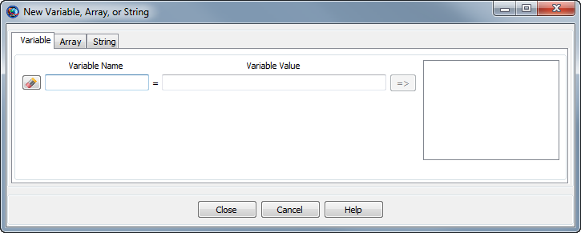
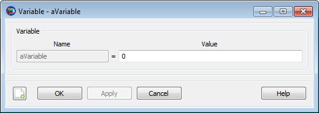

Variable — A user-defined numeric variable
The Variable resource is used to store a single numeric value for use by commands in the Mission Sequence. It can be used in place of a literal numeric value in most commands. Variable resources are initialized to zero on creation, and can be assigned using literal numeric values or (in the Mission Sequence) Variable resources, Array resource elements, resource parameters of numeric type, or Equation commands that evaluate to scalar numeric values.
The Variable resource has no fields; instead, the resource itself is set to the desired value.
| Field | Description | ||||||||||||
|---|---|---|---|---|---|---|---|---|---|---|---|---|---|
value | The value of the variable.
|
|  |
The GMAT GUI lets you create multiple Variable resources at once without leaving the window. To create a Variable:
In the Variable Name box, type the desired name of the variable.
In the Variable Value box, type the initial value of the variable. This is required and must be a literal numeric value.
Click the => button to create the variable and add it to the list on the right.
You can create multiple Variable resources this way. To edit an existing variable in this window, click it in the list on the right and edit the value. You must click the => button again to save your changes.
|  |
You can also double-click an existing variable in the resources tree in the main GMAT window. This opens the Variable properties box above that allows you to edit the value of that individual variable.
GMAT Variable resources store a single numeric value. Internally, the value is stored as a double-precision real number, regardless of whether or not a fractional portion is present.
Creating a variable and assigning it a literal value:
Create ReportFile aReport
Create Variable aVar
aVar = 12
BeginMissionSequence
Report aReport aVarUsing variables in Mission Sequence commands:
Create Spacecraft aSat
Create ForceModel anFM
Create ReportFile aReport
Create Propagator aProp
aProp.FM = anFM
Create Variable i step totalDuration nSteps
BeginMissionSequence
step = 60
totalDuration = 24*60^2 % one day
nSteps = totalDuration / step
% Report Keplerian elements every 60 seconds for one day
For i=1:nSteps
Propagate aProp(aSat) {aSat.ElapsedSecs = step}
Report aReport aSat.TAIModJulian aSat.SMA aSat.ECC aSat.INC ...
aSat.RAAN aSat.AOP aSat.TA
EndFor